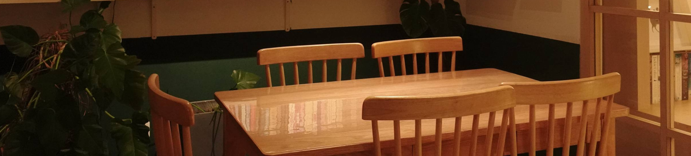
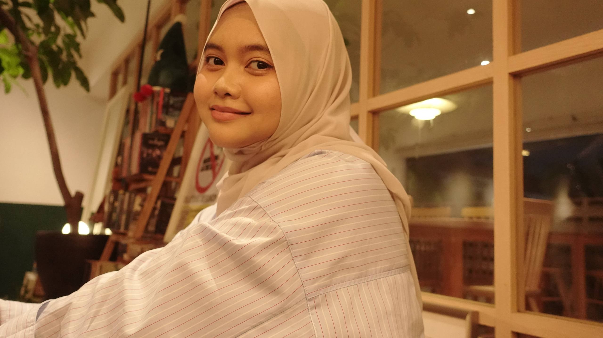
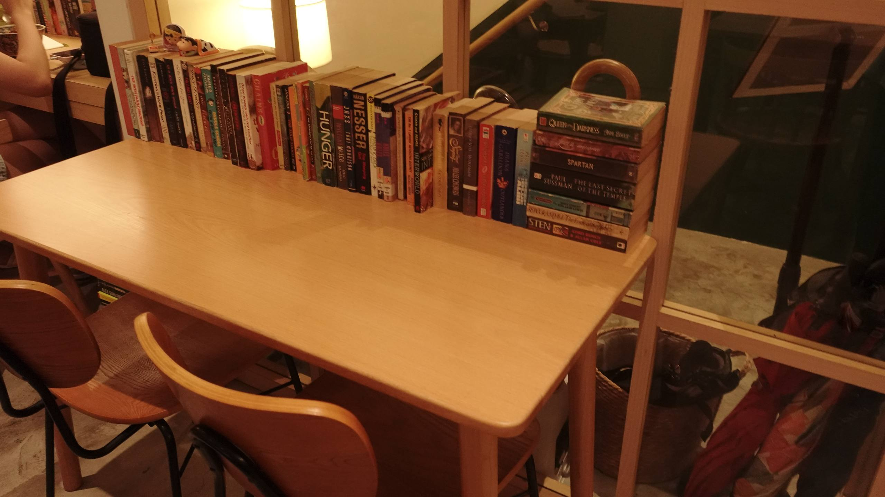
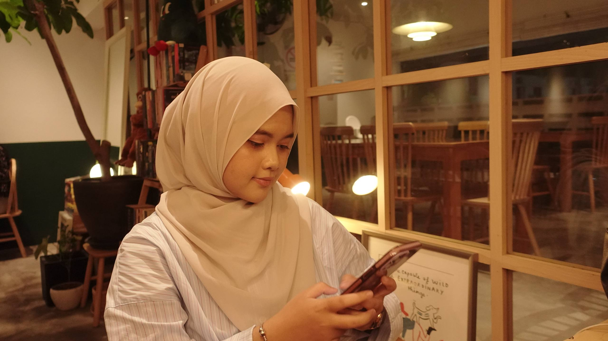
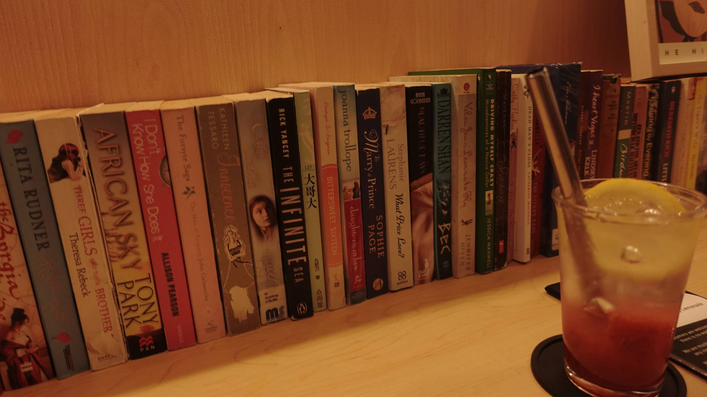

|
The next stop on my library adventure⭐
After spending a few hours exploring library at Bank Rakyat, our day didn't end there. Since we were already in Kuala Lumpur, we decided to continue our little library adventure by visiting Three Guys Library Cafe in Bangsar. Along the way, we stopped for lunch, so by the time we arrived at the café... we were already completely full... Even though I didn't get to try any of the food (I know... visiting a cafe without eating sounds a little funny), I was still excited because I came for something else... can you figure it out? Looks interesting, right?But the vlog only shows part of it. Let's take a closer look at the little details that make this cafe so unique. First Stop: The Entrance
At first, I was a little confused because I couldn't see the cafe at all. I was greeted by a staircase leading upstairs. That's because Three Guys is located on the first floor, so you will need to climb the stairs before reaching the cafe. It honestly felt like I was about to discover a hidden spot that not everyone knows about!
And... we have finally made it inside! The thing that caught my eye was this beautiful little corner right beside the entrance. There were stacks of books, wooden decorations, and cute little details that immediately made the cafe feel different from the usual ones. Before I even looked at the menu, I was already busy admiring the interior. And then, we were warmly greeted by the staff before making our way to the cashier. Even there, the library concept continued with books displayed around the counter. I honestly loved how they paid attention to even the smallest details. The dining area was also surprisingly spacious, with plenty of tables for visitors. Whether you're coming with friends, family, or even by yourself, there's enough space to sit back, relax, and enjoy the atmosphere. Looking around, it wasn't hard to see why so many people enjoy spending their time here. The Perfect Reading Spot
After walking around, I finally found my favourite spot! I chose to sit here because the books were literally just in front of me. If any title caught my attention, all I had to do was stand up and grab it from the shelf! Honestly, I would love to spent hours here if I had more time. I also noticed a "No Smoking" reminder placed nearby. I think that is a great rule to have, especially in a place that filled with books. It helps keep the environment pleasant for everyone who is here to read, study, or simply enjoy their time.
According to Three Guys, the Bangsar branch have around 2,500 books, and honestly, I believe it. Looking up at these towering shelves, it felt like there was always another book waiting to catch my attention. Indoor or Outdoor?
Lastly, not everyone likes sitting in an air-conditioned room all the time, right? If you're one of those people, Three Guys has an outdoor seating area where you can enjoy the fresh air with just the ceiling fans. I think it's a really nice option, especially in the evening when the weather is a little cooler. The balcony also gives you a view of the surrounding streets and nearby cafés around Bangsar. It was quite nice just sitting there for a while, watching people pass by and enjoying the atmosphere. Sometimes, slowing down and taking in the little things is just as enjoyable as reading a good book! 📌 Things to Know Before Visiting

|
 One more place to cherish
 Worth the visit!
 Just passing by...🤍
 What My Friend Ordered
|